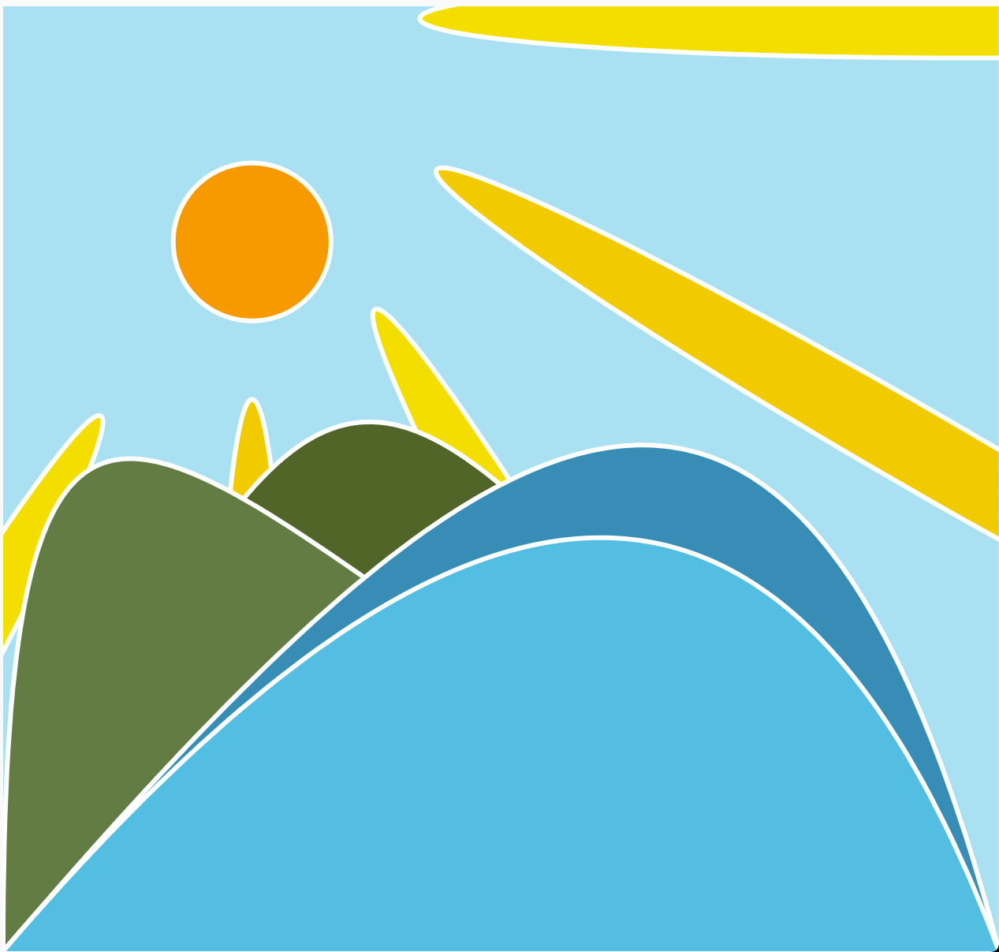
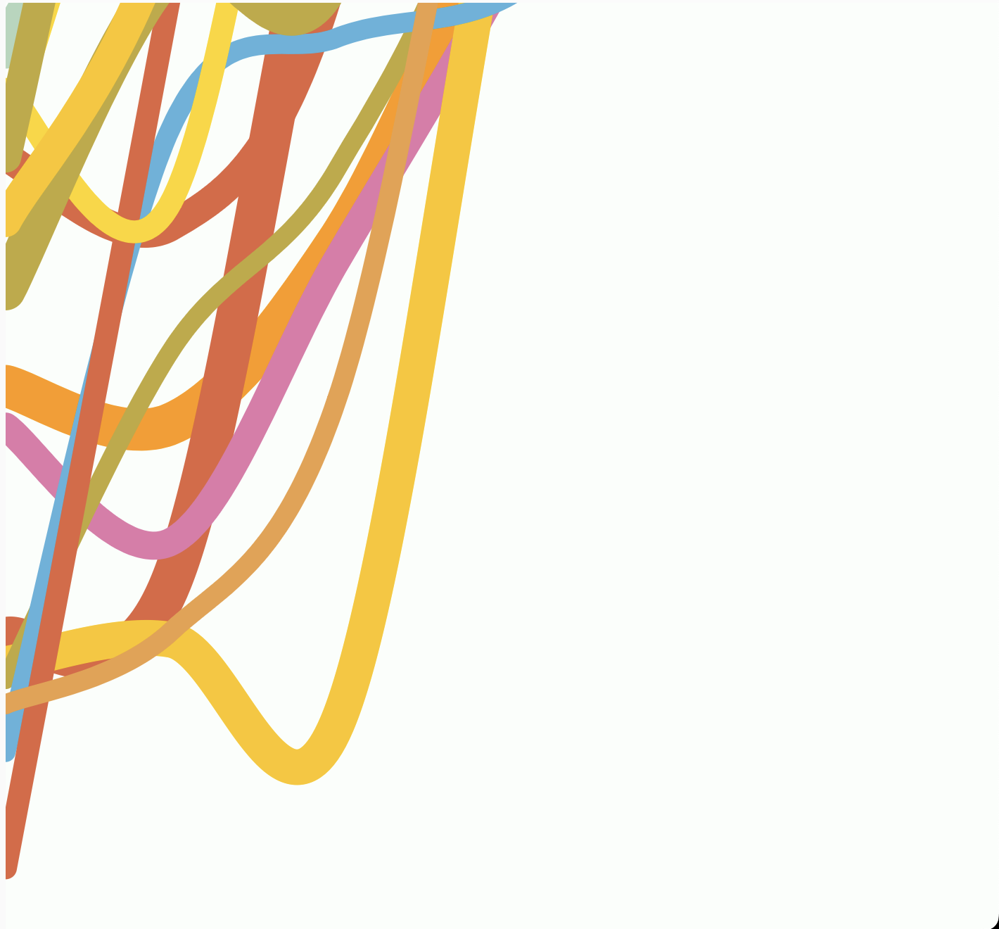
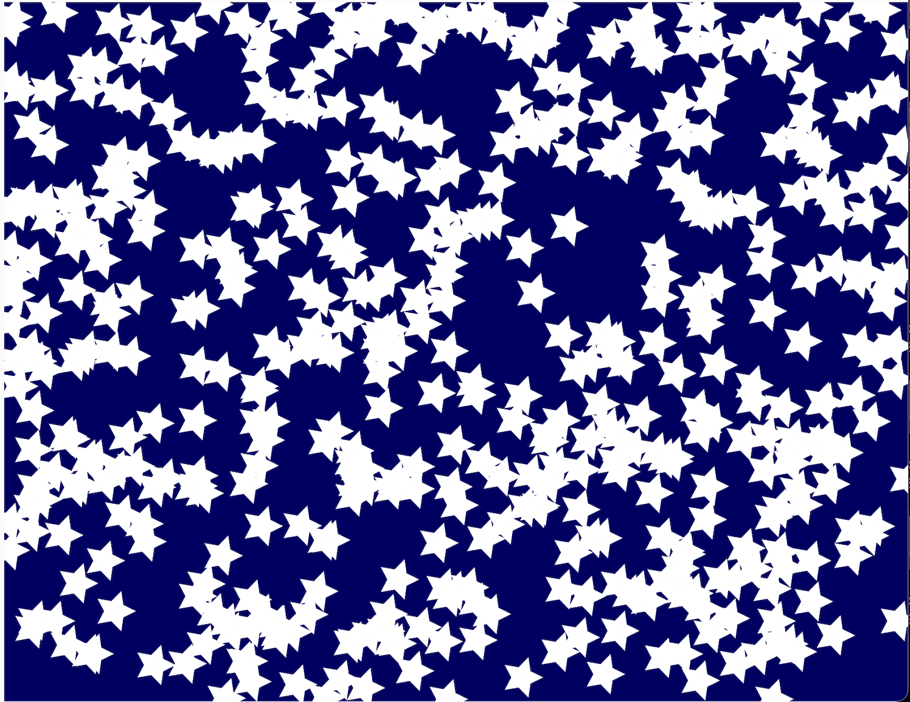
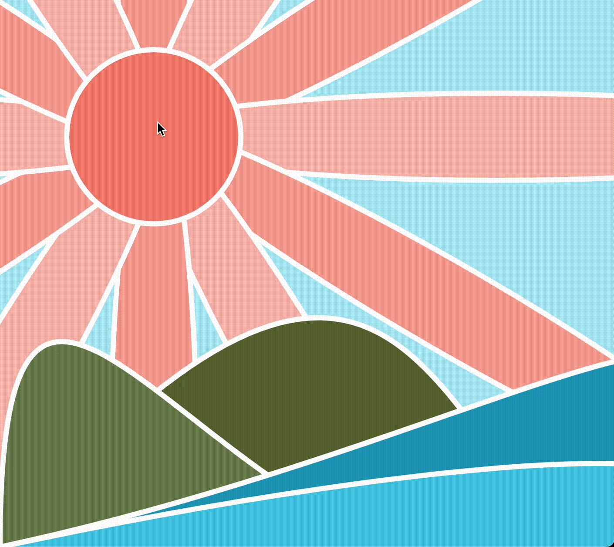

For this assignment, we were tasked with creating 6 different art pieces using javascript.
It was hard to think of something creative to do, with so many different options available. Then, after I got a rough idea of what to do, for the first sketch
I had a hard time trying to get everything to align perfectly. My idea was to create a sun and wave picture, but I had a hard time aligned the sun middle with the sun rays,
as well as creating proper waves and all those details.

However, I learned that the issue was with the way I was translating and rotating everything to create the sun rays, which was solved by implementing push and pop correctly.
I also tweaked back and forth with using a Bezier curve to get the shape I was happy with, but if I had done it over I definitely would have worked with a curve vector instead!
For this second sketch, I was inspired by Morgan Haper Collins' type of art to create some sort of abtract art with lines and cute colors. It was a struggle to figure out how to
create squiggly lines that looked good and didn't stick too closely to the top, bottom, or anything else, and how to use curveVertex.

I was able to work and tweak the numbers that I used to get a range of results that I was happy with. I used this tutorial to help me out! Alongside this trouble, I also had a hard time trying to randomize the different colors that would appear. I tried using the random() function on an array of color selections, but that wasn't working. Eventually I learned that I would have to randomize the index, and then reference that index for it to work properly.
For the sketch, I wanted to create a starry night for my sun picture. I tried to use the rotate and translate method to create a lot of different star shapes, and random to randomize their location.
However, I couldn't figure out how to get them to rotate individually instead of as a general bunch, and I didn't acutally like the way that the stars looked when they were in a star format.

After this, I decided to just use circles and have them dilate back and forth. I used an array to store the individual stars into, and used the Star class to generate random sizes and locations, and have them pulse back and forth.
For sketch 4, I took the sun picture and wanted to make the sun change into a pink when a mouse was hovering over it. I had a hard time trying to figure out what the range would be for the inside of the
sun middle because I had become confused what the actual coordinates were with the rotating and translating happening. I ended up just using a lot of print(mouseX) type of statements to help me figure that out and going back to the code to
see what I was supposed to do.

For sketch 5, I wanted to add on a sound when the mouse was in the middle of this circle. I followed along with a tutorial by The Coding Train, but for some reason my sound would end up sounding very distorted. After asking for help on discord, I realized that this was happening because the song was looping and looping over itself without really stopping. To solve this, I added in a boolean value that would act as an indicator as to whether or not the song was currently playing, so that it could stop at the proper time.
For sketch 6, I wanted to use the microphone to make some sort of line art. I learned to use the microphone fairly easily, but struggled in correctly mapping the sounds from the microphone into a vertex that would stay continuously. At first, I simply made a line that went across the screen with different y values for whenever a louder sound was played.
Even though I liked this, I wanted to do something that looked a bit more artisitic and complex, and looked a bit more smooth. To help me, I followed along with this tutorial to help calculate the equationy portions of the curve I was wanting to make, and used a microphone input instead of one of their constants. After playing around with numbers, this is what I got!